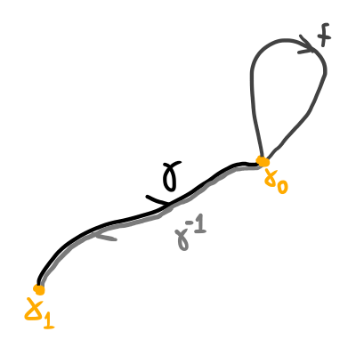

O Grupo Fundamental
Caminhos
Por mais que a noção de caminho já tenha sido informalmente utilizada no capítulo anterior, vamos agora entender precisamente o que são caminhos e como se comportam sob várias circustâncias.
Dado um espaço topológico $X$, um caminho em $X$ é uma aplicação contínua $f \colon [a,b] \to X$ com $a,b \in \mathbb{R}$. Note que a escolha de $a$ e $b$ não fazem muita diferença para a construção do caminho pois quaisquer dois intervalos fechados são homeomorfos, portanto iremos adotar $a = 0$ e $b = 1$ para a grande maioria dos exemplos. Além disso, como $[0,1]$ é contrátil, todo caminho é homotópico a uma constante.
Dizemos que dois caminhos $f,g \colon [0,1] \to X$ são homotópicos se $f \simeq g$ $(rel.$ $\{0,1\})$, ou seja, se existe uma aplicação contínua $H \colon [0,1]^2 \to X$ tal que $H(x,0) = f(x)$, $H(x,1) = g(x)$, $H(0,t) = f(0) = g(0)$ e $H(1,t) = f(1) = g(1)$. Nesse caso escreveremos $f \cong g$.
Proposição 01: $\cong$ é uma relação de equivalência. Escreveremos a classe de equivalência de um caminho $f$ como $[f]$.
Demonstração:
- Reflexiva: considere a homotopia $H(x,t) = f(x)$. Agora, note que $H(0,t) = f(0) = f(0)$ e $H(1,t) = f(1) = f(1)$ e assim $f \cong f$.
- Simétrica: se $H(x,t)$ é homotopia de $f$ a $g$, então $K(x,t) = H(x,1-t)$ é homotopia de $g$ a $f$. Note que $K(0,t) = H(0,1-t) = f(0) = g(0)$ e $K(1,t) = H(1,1-t) = f(1) = g(1)$ e assim $g \cong f$.
- Transitiva: se $H(x,t)$ é homotopia de $f$ a $g$ e $K(x,t)$ é homotopia de $g$ a $h$, então: $$L(x,t) = \left\{ \begin{array}{ll} H(x,2t) & \mbox{se } 0 \leq t \leq 1/2 \\ K(x,2t-1) & \mbox{se } 1/2 \leq t \leq 1 \end{array} \right.$$ Perceba que $L(0,t) = H(0,2t) = f(0) = g(0) = h(0)$ e $L(1,t) = H(1,2t) = f(1) = g(1) = h(1)$ se $t \in [0,1/2]$. Além disso, se $t \in [1/2, 1]$ então $L(0,t) = K(0,2t-1) = h(0) = g(0) = f(0)$ e $L(1,t) = K(1, 2t-1) = h(1) = g(1) = f(1)$ e assim segue que $f \cong h$. $\blacksquare$
Exemplo 02: se $X$ é um subconjunto convexo de um EVN, quaisquer dois caminhos $f,g \colon [0,1] \to X$ com mesmos extremos são homotópicos: basta considerar a homotopia linear $H(x,t) = (1-t)f(x) + tg(x)$.

Homotopia entre caminhos com domínio convexo em um EVN.
Diremos que um caminho $f \colon [0,1] \to X$ é fechado se $f(0) = f(1)$. Para caminhos fechados ainda focaremos, por agora, no estudo da homotopia de caminhos definida anteriormente. Porém, é importante notar que a homotopia usual de funções também é interessante quando o assunto são caminhos fechados. Essa homotopia será chamada de homotopia livre e será estudada mais para frente.
O Grupo Fundamental
Dados dois caminhos $f, g \colon [0,1] \to X$, se $f(1) = g(0)$ podemos definir o produto de $f$ e $g$ como o mapa $fg \colon [0,1] \to X$ dado por:
$$fg(t) = \left\{ \begin{array}{ll} f(2t) & \mbox{se } 0 \leq t \leq 1/2 \\ g(2t-1) & \mbox{se } 1/2 \leq t \leq 1 \end{array} \right.$$ Perceba que $fg$ é de fato um caminho entre $f(0)$ e $g(1)$ (demonstração abaixo).Essa é a demonstração.
Além de podermos multiplicar dois caminhos, podemos também tomar caminhos inversos: dado $f \colon [0,1] \to X$ um caminho, defina $f^{-1} \colon [0,1] \to X$ como $f(t) = f(1-t)$. Dada essa definição, perceba que: $$ff^{-1} = \left\{ \begin{array}{ll} f(2t) & \mbox{se } 0 \leq t \leq 1/2 \\ f(2 - 2t) & \mbox{se } 1/2 \leq t \leq 1 \end{array} \right. \quad \textrm{e} \quad f^{-1}f = \left\{ \begin{array}{ll} f(1 - 2t) & \mbox{se } 0 \leq t \leq 1/2 \\ f(2t - 1) & \mbox{se } 1/2 \leq t \leq 1 \end{array} \right.$$ Note agora que esses caminhos são homotópicos aos caminhos constantes em $f(0)$ e $f(1)$, respectivamente: $$H(x,t) = ff^{-1}((1-t)x) \quad \textrm{e} \quad G(x,t) = f^{-1}f((1-t)x).$$ O fato exposto acima nos faz pensar como seria interessante definir uma estrutura de grupo com nossos caminhos, mas também mostra que esse trabalho é mais complicado do que parece, pois teríamos de fazer isso utilizando classes de homotopia ao invés de caminhos propriamente ditos.
Continuando com a ideia de acharmos uma estrutura de grupo interessante para o conjunto dos caminhos (ou quase isso), tome os caminhos $f,g,h \colon [0,1] \to X$ com $f(1) = g(0)$, $g(1) = h(0)$. Temos que: $$f(gh)(x) = \left\{ \begin{array}{ll} f(2x) & \mbox{se } 0 \leq x \leq 1/2 \\ gh(2x - 1) & \mbox{se } 1/2 \leq x \leq 1 \end{array} \right. = \left\{ \begin{array}{ll} f(2x) & \mbox{se } 0 \leq x \leq 1/2 \\ g(4x-2) & \mbox{se } 1/2 \leq x \leq 3/4 \\ h(4x-3) & \mbox{se } 3/4 \leq x \leq 1 \end{array} \right.$$ e também $$(fg)h(x) = \left\{ \begin{array}{ll} fg(2x) & \mbox{se } 0 \leq x \leq 1/2 \\ h(2x - 1) & \mbox{se } 1/2 \leq x \leq 1 \end{array} \right. = \left\{ \begin{array}{ll} f(4x) & \mbox{se } 0 \leq x \leq 1/4 \\ g(4x-1) & \mbox{se } 1/4 \leq x \leq 1/2 \\ h(2x-1) & \mbox{se } 1/2 \leq x \leq 1 \end{array} \right.$$ Nossa tão procurada estrutura de grupo parece estar ficando cada vez mais distante, pois agora percebemos que a associatividade do produto não existe, certo? Não. O que acontece é que, novamente, precisamos falar em termos de homotopia! Perceba que a homotopia abaixo mostra que $f(gh) \cong (fg)h$: $$H(x,t) = \left\{ \begin{array}{ll} f(2x(t+1)) & \mbox{se } 0 \leq x \leq \frac{2-t}{4} \\ g(4x-2-t) & \mbox{se } \frac{2-t}{4} \leq x \leq \frac{3 - t}{4} \\ h(4x+2t-2tx-3) & \mbox{se } \frac{3-t}{4} \leq x \leq 1 \end{array} \right.$$
O objetivo, portanto, é mostrar que o produto de caminhos define uma operação no conjunto de todas as classes de homotopia de caminhos. Bom, isso de fato não acontece! O problema mora no fato de que para multiplicarmos caminhos, precisamos que o primeiro termine onde começa o segundo, portanto a operação de produto não está definida para quaisquer dois caminhos e, como veremos na proposição abaixo, precisamos assumir várias coisas sobre nossos caminhos que talvez façam com que as propriedades algébricas obtidas sejam de pouco interesse por se referirem a tipos muito especificos de caminhos.
Proposição 03: sejam $a,a',b,b' \colon [0,1] \to X$ caminhos tais que $a(0) = a'(0)$, $a(1) = a'(1) = b(0) = b'(0)$ e $b(1) = b'(1)$. Se $a \cong a'$ e $b \cong b'$ temos que $ab \cong a'b'$ e $a^{-1} \cong a'^{-1}$. Note que isso faz com que o produto de classes de homotopia de caminhos $[a][b] = [ab]$ e o inverso de uma classe de homotopia de caminhos $[a]^{-1} = [a^{-1}]$ estejam definidos sempre que o final de $a$ coincida com o começo de $b$.
Demonstração: se $H$ é uma homotopia entre $a$ e $a'$ e $K$ é uma homtopia entre $b$ e $b'$, segue que $K \colon [0,1]^2 \to X$ dada por: $$K(x,t) = \left\{ \begin{array}{ll} H(2x, t) & \mbox{se } 0 \leq x \leq 1/2 \\ K(2x-1, t) & \mbox{se } 1/2 \leq x \leq 1 \end{array} \right.$$ é uma homotopia entre $ab$ e $a'b'$. Além disso, $G \colon [0,1] \to X$ dada por $G(x,t) = H(1-x,t)$ é um homotopia entre $a^{-1}$ e $a'^{-1}$. $\blacksquare$
Por fim, vamos agora finalmente entender como se dá a estrutura de grupo procurada: fixado $x \in X$, escrevemos $\pi_1(x, X)$ para representar o grupo fundamental de $X$ centrado em $x$. Esse grupo é simplesmente o conjunto de todas as classes de homotopia de caminhos fechados em $x$, munido da operação definida na Proposição 03.Teorema 04: (por mais que o resultado seja só provar que um conjunto munido de uma operação é um grupo, este é um grupo importante o suficiente pra que essa demonstração ganhe de mim o título de teorema) fixado $x \in X$, o conjunto $\pi_1(X,x)$ munido da operação definida na Proposição 03 é um grupo.
Demonstração: como já vimos, a operação $[a][b] = [ab]$ está bem definida quando $a$ termina onde $b$ começa. Bom, como ambos são fechados em $x$, segue que $a(1) = x = b(0)$. Além disso, sabemos que $aa^{-1} \cong a(0) = x = a(1) \cong a^{-1}a$ e $ax \cong a \cong xa$, o que mostra que o mapa constante igual a $x$ é uma identidade em $\pi_1(X, x)$. Por fim, já mostramos que para quaiquer $f,g,h$ caminhos fechados em $x$, $f(gh) \cong (fg)h$ e portanto $[f]([g][h]) = ([f][g])[h]$. $\blacksquare$
Agora que já conhecemos o grupo fundamental, podemos nos perguntar: quanta informação o grupo fundamental de um espaço dá sobre ele? Melhor ainda, O QUE É o grupo fundamental de um espaço? Note que a nossa definição depende de um ponto fixado $x \in X$ e assim para cada elemento do espaço podemos definir um grupo fundamental, portanto não podemos falar de grupo fundamental de um espaço, certo?
Proposição 05: dados $x_0, x_1 \in X$, se $x_0$ e $x_1$ estão na mesma componente conexa por caminhos de $X$, temos que $\pi_1(X, x_0)$ é isomorfo a $\pi_1(X, x_1)$. Em particular, se $X$ é conexo por caminhos segue que o grupo fundamental não depende de ponto base a menos de isomorfismo e assim podemos passar a denotá-lo por $\pi_1(X)$.
Demonstração: se $\gamma$ é uma classe de homotopia de caminhos ligando $x_1$ em $x_0$, considere o mapa $\Gamma \colon \pi_1(X, x_0) \to \pi_1(X,x_1)$ dado por $\Gamma(f) = \gamma f \gamma^{-1}$. Note que esse mapa possui inversa $\Gamma^{-1}(f) = \gamma^{-1} f \gamma$ e que $\Gamma(fg) =$ $\gamma fg \gamma^{-1} =$ $\gamma f \gamma^{-1} \gamma g \gamma^{-1} =$ $\Gamma(f)\Gamma(g)$. $\blacksquare$
Ilustração de como funciona o isomorfismo $\Gamma$.
Observação 06: em geral o isomorfismo $\Gamma$ não é natural, ou seja, depende da escolha da classe de caminhos $\gamma$. Uma exceção interessante é o caso em que o grupo fundamental é abeliano. De fato, seja $\Gamma' \colon \pi_1(X, x_0) \to \pi_1(X, x_1)$ o isomorfismo associado a outra classe de homotopia $\gamma'$ de caminhos ligando $x_1$ em $x_0$. No caso abeliano, $\Gamma'(f) =$ $\gamma' f \gamma'^{-1} =$ $(\gamma' f \gamma^{-1})(\gamma\gamma'^{-1}) =$ $(\gamma\gamma'^{-1})(\gamma' f \gamma^{-1}) =$ $\gamma f \gamma^{-1} = \Gamma(f)$.
Homotopia Livre de Caminhos Fechados
Dados dois caminhos fechados $a, b \colon [0,1] \to X$, diremos que $a$ e $b$ são livremente homotópicos se existe uma homotopia $H$ entre $a$ e $b$ tal que $H(0,t) = H(1,t)$ para todo $t \in [0,1]$. Note que isso significa que cada função intermediária $x \mapsto H(x,t)$ é também um caminho fechado.
Proposição 07: homotopia livre é uma relação de equivalência.
Demonstração: basta checar que as homotopias definidas na Proposição 01 satisfazem a condição adicional imposta na definição de homotopia livre de caminhos fechados. $\blacksquare$
Proposição 08: dois caminhos fechados $f,g \colon [0,1] \to X$ são livremente homotópicos se, e somente se, existe algum caminho $h \colon [0,1] \to X$ ligando o ponto $f(0) = f(1)$ ao ponto $g(0) = g(1)$ tal que $f \cong (hg)h^{-1} \cong h(gh^{-1})$.
Demonstração: se $f$ e $g$ são livremente homotópicos, a função $h \colon [0,1] \to X$ dada por $t \mapsto H(0,t)$ é um caminho que liga $f(0)$ e $g(0).$ Para mostrarmos que $f \cong hgh^{-1}$, basta construirmos a seguinte homotopia: para cada $t \in [0,1]$ defina o mapa $h_t$ que percorre $h$ até o ponto $h(t)$. A homotopia é o produto de caminhos $K(x,t) = h_tH(x,t)h_t^{-1}$ (é um produto de caminhos pois para cada $t$, $H(x,t)$ é um caminho fechado).
Para entender o que essa homotopia faz, temos de entender o que é a homotopia livre de caminhos fechados. Dados $f$ e $g$ caminhos fechados, uma homotopia livre é basicamente uma função que para cada $t \in [0,1]$ define um caminho fechado $H_t(x)$ tal que $H_0 = f$, $H_1 = g$ e conforme $t$ aumenta, $H_t$ se "aproxima" de "g".
Homotopia livre entre dois caminhos fechados.
O que acontece aqui é que esses caminhos fechados gerados por $H$ tem pontos bases e, como $H$ é contínua, existe um caminho ($h$) formado por esses pontos-base.
Caminho formado pelos pontos-base da homotopia acima.
O que essa homotopia faz é que, para cada $t$, a homotopia percorre $100t\%$ do caminho acima até o ponto $h(t)$, percorre o caminho fechado que tem $h(t)$ como ponto-base e volta até o ponto-base de $f$. Perceba que se $t = 0$ então a homotopia apenas percorre $f$ e, se $t=1$, a homotopia percorre todo o $h$, percorre $g$ e depois volta até $f(0)$.
Supondo agora que existe $h$ um caminho de $f(0)$ até $g(0)$ tal que $f \cong hgh^{-1}$. Iremos criar uma homotopia livre entre $g$ e $hgh^{-1}$ e assim teremos que $f$ e $g$ serão livremente homotópicas, pois homotopia livre é relação de equivalência. Para isso, dado $t_0 \in [0,1]$, defina $H(x,t_0)$ como o loop que começa em $h(t)$, anda por $h$ até $g(0)$, percorre $g$ e depois percorre $h^{-1}$ até $h(t)$. Note que isso é uma homotopia livre pois é contínua, $H(x,0) = hgh^{-1}$ e $H(x,1) = g$.
Ilustração da construção descrita acima.
Assim, provamos ambas as implicações e o resultado segue. $\blacksquare$
Corolário 09: se $f \colon [0,1] \to X$ é um caminho fechado, então $f$ é livremente homotópico a algum caminho constante $y_0$ se, e somente se, $f \cong f(0)$.
Demonstração: Se $f \cong f(0)$, então escolha $y_0 = f(0)$ e o resultado segue (pois toda homotopia de caminhos fechados é também homotopia livre). Agora, se $f$ é livremente homotópico a alguma constante $y_0$, então existe um caminho $h$ entre $f(0)$ e $y_0$ tal que $f \cong hy_0h^{-1} \cong hh^{-1} \cong f(0)$. $\blacksquare$
Corolário 10: dados dois caminhos $f,g \colon [0,1] \to X$ fechados e de mesmo extremo, $f$ e $g$ são livremente homotópicos se, e somente se, $[f]$ e $[g]$ são elementos conjugados do grupo fundamental. Ou seja, existe $\gamma \in \pi_1(X, a(0))$ tal que $[f] = \gamma [g] \gamma^{-1}$.
Demonstração: Existe $\gamma$ que satisfaz a condição de conjugação note que $\gamma = [h]$ para algum caminho fechado $h$ com ponto-base $f(0)$. Assim, $[f] = [h][g][h^{-1}] = [hgh^{-1}]$ e portanto $f \cong hgh^{-1}$, assim segue que $f$ é livremente homotópico a $g$. Agora, se $f$ e $g$ são livremente homotópicos, então $[f] = [hgh^{-1}]$ para algum caminho $h$ de $f(0)$ até $g(0)$, que são o mesmo ponto, portanto $h$ é fechado e assim $[h] \in \pi_1(X, f(0))$ e portanto $[f] = [h][g][h]^{-1}$, basta escolher $\gamma = [h]$. $\blacksquare$
Corolário 11: se denotarmos por $\pi(X)$ o conjunto de todas as classes de homotopia livre de caminhos fechados em $X$, fixado um ponto $x_0 \in X$ podemos considerar o mapam $\xi \colon \pi_1(X,x_0) \to \pi(X)$ dado por $\xi([f]) =$ "classe de homotopia livre que contém $[f]$". Este mapa é bijetor se $X$ é conexo por caminhos e $\pi_1(X,x_0)$ é abeliano.
Demonstração: primeiramente, como toda homotopia de caminhos fechados é livre, todo elemento de $\pi_1(X,x_0)$ está contido em algum elemento de $\pi(X)$. Agora, se $X$ é conexo por caminhos, $\xi$ é sobrejetora, pois dada uma classe $[b] \in \pi(X)$, se $c$ é um caminho ligando $b(0)$ até $x_0$, então $b$ é livremente homotópico a $cbc^{-1}$ e, como $cbc^{-1}$ é centrado em $x_0$, segue que $\xi([cbc^{-1}]) = [b]$. Por fim, se $\pi_1(X,x_0)$ é abeliano e se $\xi([a]) = \xi([b])$, então existe uma classe $[c] \in \pi_1(X,x_0)$ tal que $[a] = [c][b][c]^{-1}$ (pela Proposição 07). Como $\pi_1(X,x_0)$ é abeliano, segue que $[a] = [b]$ e assim a função é injetiva. $\blacksquare$
Morfismos Induzidos
Dada uma aplicação contínua $f \colon X \to Y$ e fixado $x_0 \in X$, considere $f_\sharp \colon \pi_1(X, x_0) \to \pi_1(Y, f(x_0))$ dada por $f_\sharp([a]) = [f \circ a]$. Note que como $a \cong b$ implica que $f \circ a \cong f \circ b$, temos que $f_\sharp$ está bem definido. Além disso, $f_\sharp([a][b]) = f_\sharp([ab]) = [f \circ ab]$ e temos $$(f \circ ab)(t) = \left\{ \begin{array}{ll} f(a(2t)) & \mbox{se } 0 \leq t \leq 1/2 \\ f(b(2t-1)) & \mbox{se } 1/2 \leq t \leq 1 \end{array} \right. = (f \circ a)(f \circ b)(t),$$ portanto $f_\sharp$ é morfismo de grupos. Chamaremos de $f_\sharp$ o morfismo de grupos induzido por $f$.
Observação 12: Vamos fazer algumas observações sobre morfismos induzidos:
- o morfismo induzido pela identidade $id \colon X \to X$ é a identidade $id_\sharp \colon \pi_1(X, x_0) \to \pi_1(X, x_0)$, pois $id'([a]) = [id \colon a] = [a]$;
- dadas duas aplicações contínuas $f \colon X \to Y$ e $g \colon Y \to Z$, temos $(g \circ f)_\sharp = g_\sharp \circ f_\sharp \colon \pi_1(X, x_0) \to \pi_1(Z, g(f(x_0)))$. Afinal, $$(g \circ f)_\sharp[a] = [(g \circ f) \circ a] = [g \circ (f \circ a)] = g_\sharp([f \circ a]) = g_\sharp(f_\sharp(a));$$
- se $f$ é homeomorfismo, $f_\sharp$ é isomorfismo. Note que $(f^{-1}_\sharp$ é isomorfismo também e é a inversa de $f_\sharp$). Perceba como esse resultado é importante: acabamos de provar que o grupo fundamental é um invariante topológico, ou seja, espaços homeomorfos e conexos por caminho possuem o mesmo grupo fundamental;
- se $f,g$ são homotópicas relativamente a $x_0$, temos $f_\sharp = g_\sharp \colon \pi_1(X, x_0) \to \pi_1(Y, f(x_0) = g(x_0))$, pois temos $f \circ a \cong g \circ a$.
Corolário 13: se $f,g \colon X \to Y$ são aplicações contínuas homotópicas, os morfismos induzidos $f_\sharp$ e $g_\sharp$ estão relacionados por $f_\sharp([a]) = \gamma g_\sharp([a])\gamma^{-1}$ para todo $a \in \pi_1(X, x_0)$, onde $\gamma$ é uma classe de homotopia de caminhos ligando $f(x_0)$ até $g(x_0)$.
Demonstração: se $H$ é uma homotopia entre $f$ e $g$, dado $a \colon [0,1] \to X$ caminho fechado com ponto-base $x_0$, a aplicação $(s,t) \mapsto H(a(s), t)$ é uma homotopia livre entre $f \circ a$ e $g \circ a$. Agora, pela Proposição 08, segue que $f \circ a \cong c(g \circ a)c^{-1}$ para algum $c$ caminho ligando $(f \circ a)(0) = f(a(0)) = f(x_0)$ em $(g \circ a)(0) = g(a(0)) = g(x_0)$. Ou seja, basta tomarmos $\gamma =$ $[c]$ e assim $f_\sharp([a]) =$ $[f \circ a] =$ $[c(g \circ a)c^{-1}] =$ $[c][g \circ a][c]^{-1} =$ $\gamma[g\circ a]\gamma^{-1} =$ $\gamma g_\sharp([a]) \gamma^{-1}$.
Proposição 14: se $X$ e $Y$ são conexos por caminhos e tem o mesmo tipo de homotopia, então seus grupos fundamentais são isomorfos. Mais precisamente, se $f \colon X \to Y$ é equivalência homotópica, então $f_\sharp$ é isomorfismo.
Demonstração: seja $g \colon Y \to X$ um inverso homotópico de $f$. Fixe $x_0 \in X$ e defina $y_0 = f(x_0)$. Considere então os morfismos induzidos $f_\sharp \colon \pi_1(X, x_0) \to \pi_1(Y, y_0)$, $g_\sharp \colon \pi_1(X, y_0) \to \pi_1(X, g(y_0))$ e $f_\sharp^1 \colon \pi_1(X, g(y_0)) \to \pi_1(Y, f(g(y_0)))$.
Como $g \circ f \simeq id_X$, o corolário anterior dá que $g_\sharp \circ f_\sharp \colon \pi_1(X, x_0) \to \pi_1(X, g(y_0))$ é dado por $(g_\sharp \circ f_\sharp)([a]) = \gamma[a]\gamma^{-1}$ para alguma classe $\gamma$ de caminhos ligando $g(f(x_0))$ em $x_0$. Analogamente, como $f \circ g \simeq id_Y$, o corolário anterior dá que $f_\sharp^1 \circ g_\sharp \colon \pi_1(Y, y_0) \to \pi_1(Y, f(g(y_0)))$ é dado por $(f_\sharp^1 \circ g_\sharp)([b]) = \delta [b] \delta^{-1}$ para aluma classe $\delta$ de caminhos ligando $f(g(y_0))$ em $y_0$.
Por fim, note que as aplicações $\Gamma \colon \pi_1(X, x_0) \to \pi_1(X, g(y_0))$ dada por $\Gamma([a]) = \gamma [a] \gamma^{-1}$ e $\Delta \colon \pi_1(Y, y_0) \to \pi_1(Y,f(g(y_0)))$ dada por $\Delta([b]) = \delta [b] \delta^{-1}$ são isomorfismos. Portanto do parágrafo anterior concluímos que $g_\sharp$ é também um isomorfismo. Daí, segue que $f_\sharp = (g_\sharp)^{-1} \circ \Gamma$ é isomorfismo.
Corolário 15: se $X$ é contrátil, $\pi_1(X)$ é trivial.
Demonstração: note que o grupo fundamental de $\{x\}$ qualquer que seja $x$ é trivial, pois o único caminho possível é o constante igual a $x$. Além disso, claramente $\{x\}$ é contrátil.
Espaços Simplesmente Conexos
Diremos que $X$ um espaço conexo por caminhos é simplesmente conexo se $\pi_1(X)$ é trivial. Em outras palavras, todo caminho fechado $a \colon [0,1] \to X$ satisfaz $a \cong a(0)$. Outras formulações para esta definição são equivalentes, como veremos abaixo.
Proposição 16: um espaço $X$ é simplesmente conexo se, e somente se:
- todo caminho fechado é livremente homotópico a uma constante;
- quaisquer duas aplicações $f, g \colon \mathbb{S}^1 \to X$ são homotópicas;
- toda aplicação $f \colon \mathbb{S}^1 \to X$ admite extensão contínua para a bola $\mathbb{B}^2$.
- quaisquer dois caminhos $a, b \colon [0,1] \to X$ com $a(0) = b(0)$ e $a(1) = b(1)$ são homotópicos.